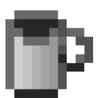

Ивенты
 Крепкие напитки 1 июня - 20 июня
Задачей является до 20 июня приготовить пиво/ром (в майнкрафте(если не знаете как - посмотрите гайд)) и дать его владельцу сервера (20-го июня). Когда он соберёт ваши кружки с крепким напитком, то он выпьет каждую из них. Далее он оценит эти напитки и выберет лучший.
Победитель будет награждён ресурсами.
Мы против алкоголя, но делаем ивент чисто по приколу